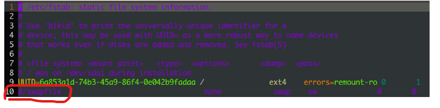

在乾淨環境建立k8s環境
在乾淨環境建立k8s環境
使用k8sadmin架設k8s環境
linux環境設定
在開始安裝之前，需要先把host給設定好，所以會先說明要做哪些動作。
關閉swap功能
-
關閉swap
1swapoff -a -
編輯
/etc/fstab1vim /etc/fstab把檔案裡面
/swapfile開頭的這行註解掉 編輯swap的畫面.png
安裝docker
-
安裝所需的工具
1sudo apt-get update && sudo apt-get install ca-certificates curl gnupg lsb-release -
下載docker並新增官方的GPG key
1sudo mkdir -m 0755 -p /etc/apt/keyrings && curl -fsSL https://download.docker.com/linux/ubuntu/gpg | sudo gpg --dearmor -o /etc/apt/keyrings/docker.gpg -
設定放docker的repository
1echo "deb [arch=$(dpkg --print-architecture) signed-by=/etc/apt/keyrings/docker.gpg] https://download.docker.com/linux/ubuntu $(lsb_release -cs) stable" | sudo tee /etc/apt/sources.list.d/docker.list > /dev/null -
安裝docker engine
1sudo apt-get update && sudo apt-get install docker-ce docker-ce-cli containerd.io docker-buildx-plugin docker-compose-plugin -
測試有沒有成功安裝docker engine
1sudo docker run hello-world -
調整權限，這樣以後就不需要每個docker command前面還要加sudo了。
1sudo usermod -aG docker $USER
安裝apt-transport-https、ca-certificates、curl
|
|
|
|
加上 Kubernetes apt 的repo
-
下載google cloud public signing key
1sudo curl -fsSLo /etc/apt/keyrings/kubernetes-archive-keyring.gpg https://packages.cloud.google.com/apt/doc/apt-key.gpg -
加上
apt的repo1echo "deb [signed-by=/etc/apt/keyrings/kubernetes-archive-keyring.gpg] https://apt.kubernetes.io/ kubernetes-xenial main" | sudo tee /etc/apt/sources.list.d/kubernetes.list
安裝k8s環境執行用的工具
更新apt並安裝kubeadm, kubectl, kubelet，並鎖定版本
|
|
安裝cri-dockerd
Container Runtime Interface (CRI)：Kubelet會使用CRI 界面來建立container。
-
到cri-dockerd的repo 上面，release找到對應的版本。複製下載鏈接，使用wget在機器上面下載下來
-
例如ubuntu的
1 2wget https://github.com/Mirantis/cri-dockerd/releases/download/v0.3.1/cri-dockerd_0.3.1.3-0.ubuntu-jammy_amd64.deb sudo dpkg -i cri-dockerd_0.3.1.3-0.ubuntu-jammy_amd64.deb
-
-
檢查有沒有安裝成功並跑起來
1sudo systemctl status cri-docker.socket
啟動k8s cluster
如果有需要的話，可以使用
kubeadm init -h看看，上面有更多資訊可以看
-
使用kubeadm建立cluster
1sudo kubeadm init {options}-
options常用的有
-
--pod-network-cidr-
希望給pod的網段例如：10.244.0.0/16
-
要注意，如果和要使用的CNI的預設不一樣，到時候得要在CNI上面設定一下。
-
-
--apiserver-advertise-address- 來指定api server的網址，如果沒有設定，會使用預設的$網路$ 界面。
-
--apiserver-bind-port-
apiserver的port，預設是6443
-apiserver-bind-port int32 Default: 6443Port for the API Server to bind to. (View Source )
-
-
--service-cidr- 來指定service到時候被產生出來的virtual ip的range
-
-
-
可以使用
--cri-socket={CRI的socket}指定特定的cri -
例子
1sudo kubeadm init --pod-network-cidr 192.167.0.0/16 --cri-socket unix:/var/run/cri-dockerd.sock --service-cidr 192.168.192.0/18 -
做錯了可以使用kubeadm reset來關閉剛剛啟動（或者失敗）的k8s cluster。
-
最後為了讓現在的帳號可以使用kubectl，而不是使用root帳號，需要做以下的操作
1 2 3mkdir -p $HOME/.kube sudo cp -i /etc/kubernetes/admin.conf $HOME/.kube/config sudo chown $(id -u):$(id -g) $HOME/.kube/config
安裝CNI
-
Container Network Interface(CNI)
-
負責container之間、還有對外的各種溝通
-
負責創建、回收container時，用到的Network的功能。
-
-
常見的CNI有
Flannel(已停止維護)、Calico。-
安裝Flannel的方法：
1kubectl apply -f https://raw.githubusercontent.com/coreos/flannel/master/Documentation/kube-flannel.yml -
安裝Calico的方法：
-
下載yaml檔
1wget https://raw.githubusercontent.com/projectcalico/calico/v3.24.1/manifests/calico.yaml -
安裝並啟動
1kubectl apply -f calico.yaml
-
-
以上就完成了在Linux上架好一個k8s環境的controller plane (k8s叢集的master)了。但是這個時候還沒辦法在k8s環境裡面，在預設的情況下，controller plane所在的host會有設定一個汙點（類似tag的東西），不讓任何非系統運行是所需的Pod（k8s運行的基本單位）被啟動起來。所以還需要再把其它機器加進來k8s cluster中，才能正常運作。
把其它臺機器加入這個k8s cluster
-
和controller prlane一樣，也要先設定好環境：linux環境設定 和安裝k8s環境執行用的工具
-
使用上面在建立cluster時，最後在畫面上顯示的join命令。
1kubeadm koin --token {cluster產生的token} -
要注意的是，token只有24小時的有效期限。過期了需要回到controller plane產生新的token
1kubeadm token create --print-join-command